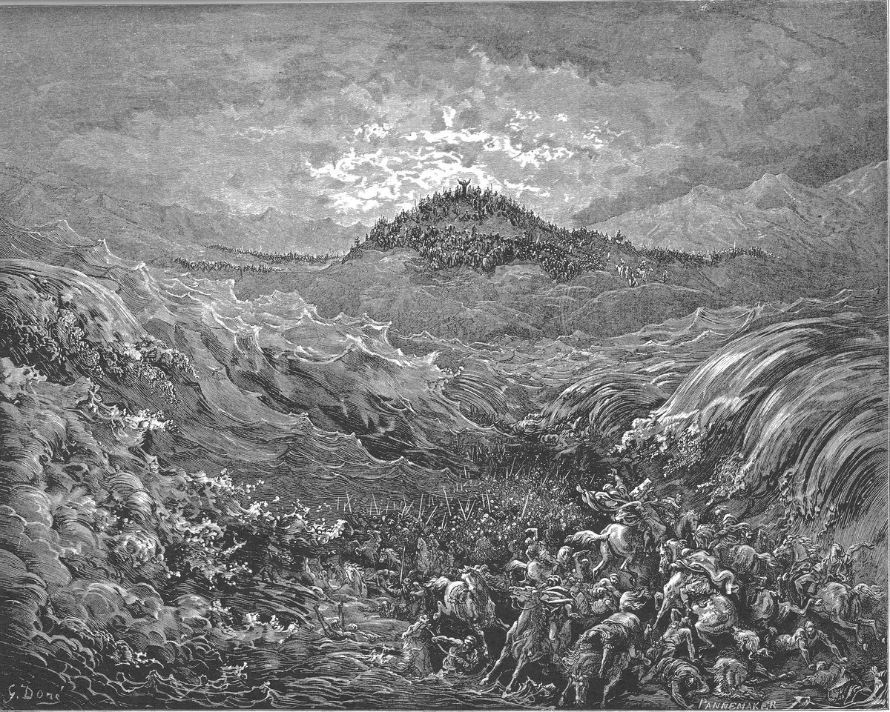

Isaías 43 — La Traducción Mister

Isaías 43:16–17. Los versículos recuerdan el mar, «el que saca carro y caballo, ejército y poderío a una; se tienden, no se levantarán». El grabado es el de Doré del mar en el Éxodo; el capítulo mismo no nombra el ahogamiento de Egipto ni a Moisés, y Rashi lee el pasaje como el mar Rojo.

Notas del traductor — versículo por versículo
⭐ «No tengas miedo», y «te he llamado por tu nombre». «No tengas miedo» (al tirá) está en 74 versículos de la Biblia hebrea, y es la palabra que ya ha abierto dos veces el consuelo del libro, en Isaías 41:10 y 41:14 (ambos ya en estas páginas). Aquí se le da una razón que es un precio pagado: ga’altíja, «te he redimido», el verbo del go’el, el pariente que recompra (diccionario). La RV60 tiene «yo te redimí», la NVI «yo te he redimido», y la TNM 1987 «yo te he recomprado». «Te he llamado por tu nombre» (qaratí ve-shimjá) está en un solo versículo de la Biblia hebrea; la RV60 tiene «te puse nombre», y la NVI y la TNM 1987 «te he llamado por tu nombre». Rashi abre el capítulo con «Y ahora, a pesar de todo esto, así dijo el Señor: no temas». Radak dice que algunos leen toda la sección de Ciro, que envió a Israel fuera de Babilonia; su padre la leyó de Senaquerib, y él lo llama «el correcto», y añade que también puede leerse del futuro. Ibn Ezra dice: puesto que ustedes lo confiesan, ahora Jehová los redimirá; y «llamado por tu nombre» es una gran honra.
⭐ «El que te creó, Jacob, y el que te formó, Israel». Los dos verbos se mantienen aparte: bará, «creó», reservado en la Biblia para Dios (diccionario), y yatsar, «formó», el verbo del alfarero (diccionario). Se ponen sobre los dos nombres de un solo pueblo, Jacob creado e Israel formado, y los mismos dos verbos vuelven en el versículo 7 con un tercero, asá, «hizo». La TNM 1987 tiene «tu Creador, oh Jacob, y tu Formador, oh Israel». El Isaías griego tiene «el que te hizo» para el primer verbo y «el que te formó» para el segundo, ho poiēsas y ho plasas, y termina «mío eres tú», emos ei su.
⚠ «Cuando pases por las aguas… por el fuego». «Cuando pases por las aguas» (ki ta‘avór ba-máyim) está en un solo versículo de la Biblia hebrea, y lleva la promesa por segunda vez: ittejá aní, «yo estoy contigo», aquí y otra vez en el versículo 5, donde es «porque yo estoy contigo», la fórmula que Pablo oye en una noche de Corinto (Hechos 18:10, ya en estas páginas). Rashi lee las aguas como el mar Rojo y los ríos como los pueblos entre los que vivió Israel, numerosos como un río e incapaces de prevalecer; el fuego como el día venidero en que el sol quema a los impíos (Malaquías 3:19). Radak toma las aguas y los ríos como el ejército de Senaquerib, como el río de Asiria en Isaías 8:7, y el fuego como su arder, y, en la lectura del futuro, los pueblos por los que Israel pasará al salir del destierro. Ibn Ezra hace de las aguas y los ríos los príncipes de Media y de Persia cuando tomen Babilonia. La RV60 y la RV 1909 tienen «no te quemarás, ni la llama arderá en ti», la NVI «no te quemarás ni te abrasarán las llamas», y la TNM 1987 «no te quemarás, ni la llama misma te chamuscará».
⭐ «He dado a Egipto como tu rescate». «He dado tu rescate» (natatí kofrejá) está en un solo versículo de la Biblia hebrea. La palabra es kófer, el precio pagado por una vida (diccionario). La RV60 y la RV 1909 tienen «a Egipto he dado por tu rescate, a Etiopía y a Seba por ti», la NVI «a Cus y a Seba en tu lugar», y la TNM 1987 «a Etiopía y Sebá en lugar de ti». Rashi dice que Egipto fue el rescate porque murieron sus primogénitos, e Israel, el hijo primogénito de Dios, merecía la destrucción; Radak lo lee de Senaquerib, que se volvió de Jerusalén para pelear con Tirhaca rey de Cus (2 Reyes 19:9) y cuyo ejército cayó allí; Ibn Ezra, de los reyes de Media haciendo daño a Egipto y a Cus. El griego tiene Soēnēn, «Siene», por Seba. El versículo 4 da la razón, «porque has sido precioso a mis ojos, has sido honrado, y yo te he amado», y el precio sube: «doy humanidad en tu lugar, y pueblos por tu alma». La RV60 tiene «hombres» y «tu vida», la NVI «pueblos» y «tu vida», y la TNM 1987 «hombres» y «tu alma»; el griego tiene «gobernantes por tu cabeza». «Doy humanidad en tu lugar» está en un solo versículo de la Biblia hebrea.
⭐ «Porque yo estoy contigo… del oriente… del occidente». «No tengas miedo, porque yo estoy contigo» (al tirá ki ittejá aní) está en un solo versículo de la Biblia hebrea, y «porque yo estoy contigo» (ki ittejá aní) está en seis versículos: aquí, y Jeremías 1:8, 1:19, 15:20, 30:11 y 46:28 (ninguno de esos todavía en estas páginas). La descendencia es reunida de las cuatro direcciones, zar’éja, «tu descendencia». El versículo 6 habla a los vientos como a siervos: «Diré al norte: Entrega; y al sur: No retengas». Rashi dice que el viento del norte es débil y necesita «entrega», y el del sur es fuerte, y «no retengas» le pide soplar con fuerza, como en «Despierta, viento del norte, y ven, viento del sur» (Cantares 4:16). La RV60 tiene «Da acá» y «No detengas», la NVI «¡Entrégalos!» y «¡No los retengas!», y la TNM 1987 «¡Entrega acá!» y «No retengas». El griego lee «Boreas» y «Libs», el viento del norte y el del suroeste.
⭐ «Creado… formado… hecho». «Lo formé, sí, lo hice» (yetsartív af ‘asitív) está en un solo versículo de la Biblia hebrea, y con bera’tív, «lo creé», son los tres verbos de hacer en un solo versículo. Isaías 45:7 y 45:18 ponen los mismos verbos de creación en labios de Jehová sobre la luz y la tierra. La RV60 tiene «para gloria mía los he creado, los formé y los hice», la NVI «al que yo hice y formé», y la TNM 1987 «a quien he formado, sí, a quien he hecho». Radak da a cada verbo una tarea: yetsirá es el modelar de los miembros, ‘asiyá la provisión de alimento y de lo que el cuerpo necesita, de modo que una persona considere cómo se hicieron sus miembros con sabiduría y se dispuso su sustento desde el día de su nacimiento. Ibn Ezra dice que ‘asitív significa «y lo puse en orden», y rechaza la lectura de Rabí Salomón, el poeta, de que significa la luz del mundo, por no tener relación con el pasaje. «Todo el que es llamado por mi nombre» es, para Radak, todo Israel, o los justos entre ellos, «todo el que está escrito para vida en Jerusalén»; Ibn Ezra insiste en que la frase es pasiva, tal como está, «los que son llamados por mi nombre», y no «los que llaman». El griego tiene «todo el que es llamado por mi nombre; porque lo preparé para mi gloria, y lo formé, y lo hice».
⚠ «Un pueblo ciego, aunque hay ojos». «Un pueblo ciego» (‘am ‘ivér) está en un solo versículo de la Biblia hebrea, y el verbo con que empieza el versículo, hotsí, «saca», puede ser una orden, «saca», o un infinitivo, «para sacar». La RV60 y la RV 1909 tienen «Sacad al pueblo ciego que tiene ojos», la NVI «Saquen al pueblo ciego, aunque tiene ojos», y la TNM 1987 «Saca a un pueblo [que es] ciego aunque ojos mismos existen». Radak lee el infinitivo: dije que sacara del destierro a un pueblo que es como ciego y sordo; Rashi, para sacar del destierro a los que fueron desterrados porque se volvieron como ciegos, teniendo ojos y no viendo; Ibn Ezra, que lo eran desde el principio, aunque tienen ojos. El griego tiene «y saqué a un pueblo ciego». Los ciegos y los sordos con ojos y oídos son un tema del siervo (Isaías 42:18–20), «Sordos, oigan; ciegos, miren».
⭐ «Que den sus testigos y sean justificados». La escena es un tribunal, y es el que se convocó en Isaías 41:1, «acerquémonos juntos a juicio», y se aprieta en 41:22, «Las cosas primeras, ¿qué fueron? Dígannoslo» (ambos ya en estas páginas). Las naciones se han reunido; la pregunta es quién de entre ellas ha declarado «esto», y nos ha hecho oír «las cosas primeras», y la prueba son testigos (diccionario): que den sus testigos y sean justificados, y que oigan y digan «Es verdad», emet. La RV60 tiene «Congréguense a una todas las naciones», la NVI «Que se reúnan todas las naciones», y la TNM 1987 «Que todas las naciones se junten en un solo lugar». Rashi dice que si todas las naciones se reunieran, ¿cuál de ellas o de sus profetas habría dicho el futuro, o los primeros sucesos ya pasados, diciendo «los anunciamos antes de que ocurrieran»? El griego tiene «gobernantes» donde el hebreo tiene «pueblos».
⭐ «Ustedes son mis testigos… y mi siervo a quien he escogido». «Ustedes son mis testigos» (atem ‘edái) está en tres versículos de la Biblia hebrea: aquí, el versículo 12, e Isaías 44:8. El siervo ya es conocido: «tú, Israel, mi siervo, Jacob, a quien he escogido» (Isaías 41:8, ya en estas páginas). Rashi toma «mi siervo» como Jacob, que testificará de la promesa hecha cuando fue a Mesopotamia; Radak e Ibn Ezra toman ambos «ustedes» como Israel y «mi siervo» como el profeta, Radak porque el profeta anunció la caída de Senaquerib antes de que ocurriera. El griego tiene «Sean mis testigos, y yo soy testigo, dice el Señor Dios, y mi siervo a quien escogí». La razón es «que sepan y me crean y entiendan que yo soy él».
⭐ «Yo soy él», y «antes de mí no fue formado dios alguno». «Yo soy él» (aní hu), como declaración propia de Dios, está en siete versículos de la Biblia hebrea: Deuteronomio 32:39, Isaías 41:4, 43:10 y 43:13 aquí, e Isaías 46:4, 48:12 y 52:6 (esos tres últimos aún por llegar en esta traducción); el octavo resultado del texto es la confesión de un hombre, no de Dios. Ibn Ezra dice que las palabras enuncian la unicidad sobre la cual nada hay, pues todo lo que existe no es él mismo. «Antes de mí no fue formado dios alguno» (lefaná lo notsár El) está en un solo versículo de la Biblia hebrea, y el pasivo notsár inquieta a los comentaristas. Radak dice que es difícil, pues el que habla no tiene principio, y da dos salidas: antes de que yo formara las cosas formadas, ningún dios formó ninguna, y después de mí ninguno; o, con su padre, notsár se toma tal como está, nada fue formado por ningún dios sino por mí. Ibn Ezra dice que algunos refieren «antes de mí» al Sinaí, lo cual no hace falta, y advierte que gente ciega de corazón podría pensar que el profeta dice que Dios fue formado, «Dios no lo quiera». El griego tiene «antes de mí no hubo otro Dios, y después de mí no lo habrá». La RV60 tiene «antes de mí no fue formado dios, ni lo será después de mí», la RV 1909 «antes de mí no fué formado Dios», la NVI «Antes de mí no hubo ningún otro dios ni habrá ninguno después de mí», y la TNM 1987 «Antes de mí no fue formado Dios alguno».
⭐ «Yo, yo soy Jehová», «ningún extraño entre ustedes» y «desde hoy». «Yo, yo soy Jehová» (anojí anojí Yehová) está en un solo versículo de la Biblia hebrea, y el versículo que sigue termina «yo soy Dios». Los tres verbos del versículo 12, «yo anuncié, y salvé, e hice oír», son la prueba que un testigo puede dar. «Ningún extraño entre ustedes» es zar (diccionario), sin «dios» en el hebreo; la RV60 tiene «dios ajeno», la RV 1909 «extraño», la NVI «un dios extraño», y la TNM 1987 «[dios] extraño». Rashi tiene al extraño como un dios extraño que habría mostrado grandeza en aquellos días. «Y no hay libertador de mi mano» (ve-éin miyyadí matsíl) está en dos versículos de la Biblia hebrea, aquí y en Deuteronomio 32:39, donde sigue al primer «yo soy él». Gam miyóm, «también desde hoy», es también un enigma: la RV60 y la RV 1909 tienen «Aun antes que hubiera día, yo era», la NVI «Desde los tiempos antiguos, yo soy», y la TNM 1987 «todo el tiempo yo soy el Mismo». Rashi y Radak lo leen ambos como antes de que hubiera un día, antes del mundo; Radak añade «desde hace mucho», como en «desde siempre he quebrado tu yugo». Y «quién puede volverla atrás», umí yeshivéna: la RV60 tiene «¿quién lo estorbará?», la NVI «puede desbaratarlo», y la TNM 1987 «¿quién puede volverla atrás?».
⚠ «Haré descender a todos ellos como fugitivos». «Por causa de ustedes he enviado a Babilonia»: «He enviado a Babilonia» (shillájti Bavélah) está en un solo versículo de la Biblia hebrea, y quién dice ese «he enviado» es disputado. Radak dice que la profecía es del destierro en Babilonia, y que Jehová ha enviado a Ciro a Babilonia para destruirla y sacar de ella a Israel; le extraña que Ibn Ezra lea el verbo como si fuera shulájti, un pasivo, «fui enviado». Ibn Ezra dice que algunos oyen en él al profeta, otros, como él, la palabra de Jehová, que vino tan pronto que es como si hubiera enviado; y cuenta que un gran sabio de España dijo que la Gloria habla al profeta y «el príncipe de Israel» es el enviado a Babilonia para redimir a Israel. La palabra siguiente es más difícil: bariájim. La RV60 tiene «como fugitivos», la RV 1909 «fugitivos todos ellos», la NVI «como fugitivos», y la TNM 1987 «haré que desciendan las barras de las prisiones». Radak lo lee como fugitivos, pues los babilonios huyen cuando viene Ciro. Ibn Ezra dice que son las barras de Babilonia, sus puertas, y cita «destruyó y quebró sus cerrojos» (Lamentaciones 2:9, ya en estas páginas). Rashi da el «con remos» del Targum.
⭐ «En las naves de su griterío». Rinnatám es «su griterío», un grito resonante, de gozo o de lamento. La RV60 tiene «en las naves de que se gloriaban», la RV 1909 «clamor de Caldeos en las naves», la NVI «En los barcos que eran su orgullo», y la TNM 1987 «los caldeos en las naves con gritos quejumbrosos por su parte». Radak lo lee como el grito de llanto, como en «Levántate, da voces en la noche» (Lamentaciones 2:19, ya en estas páginas); Rashi, como regocijo, y anota que también puede tomarse de la noticia de la redención: los caldeos llevados a Media en las mismas naves en que se regocijaban. Ibn Ezra dice que los caldeos en naves serán hechos descender de ellas. El griego tiene «los caldeos serán atados en naves». La RV60 y la RV 1909 mantienen «Redentor vuestro» y «el Santo de Israel», como en Isaías 41:14 (ya en estas páginas), donde los mismos dos títulos cierran el versículo; la TNM 1987 tiene «el Recomprador de ustedes».
⭐ «El Creador de Israel, el Rey de ustedes», y un camino en el mar. El versículo 15 pone el crear, borë Yisra’él, junto a «el Rey de ustedes», malkéjem. El versículo 16 abre una nueva introducción, «Así dice Jehová, el que da camino en el mar y senda en aguas poderosas», y el versículo 17 son los egipcios: «el que saca carro y caballo, ejército y poderío a una; se tienden, no se levantarán». Rashi dice que es el mar Rojo, donde sacó a los egipcios para que persiguieran a Israel «con carros y caballos», y todos yacieron muertos en la orilla. Radak dice que tras el mar viene el otro milagro, el ejército de Senaquerib, sacado de Asiria como se silba a la mosca del extremo de los ríos de Egipto, y caído en una noche, «y he aquí todos eran cadáveres» (2 Reyes 19:35); Ibn Ezra dice que son los caldeos que salen a pelear con los persas.
⭐ «Apagados como una mecha». La última imagen es una lámpara que se apaga: da‘ajú ke-fishtá kavú, «se han extinguido, se han apagado como una mecha». Pishtá es el lino de una mecha, la mecha que humea el siervo no apagará en Isaías 42:3. La RV60 y la RV 1909 tienen «como pábilo quedan apagados», la NVI «extinguidos como mecha que se apaga», y la TNM 1987 «Como una mecha de lino tienen que ser apagados». Rashi tiene el «como lino se atenuaron, se apagaron» del Targum; Radak dice que es el lino que, ardiendo, se apaga rápido, y así murieron en un momento; Ibn Ezra toma da‘ajú como «apagados», y cita «su lámpara se apagará en medio de las tinieblas» (Proverbios 20:20). El griego tiene «como lino apagado», hōs linon esbesmenon.
⭐ «No recuerden las cosas primeras». «No recuerden las cosas primeras» (al tizkerú ri’shonót) está en un solo versículo de la Biblia hebrea, y viene justo después de que los versículos 16 y 17 acaban de recordar el mar. Rashi lo resuelve: los milagros que hice en Egipto, no los recuerden de ahora en adelante, pues estarán ocupados en esta redención, para dar gracias y alabar. «Las cosas primeras» son lo que se desafió en el versículo 9, «hacernos oír las cosas primeras». El verbo es zakhar, «recordar», nunca un mero acordarse en hebreo (diccionario). El primer capítulo de Esdras dice a los exiliados del regreso exactamente esto (Esdras 1, ya en estas páginas). La RV60 tiene «No os acordéis de las cosas pasadas», la NVI «Olviden las cosas de antaño», y la TNM 1987 «No se acuerden de las cosas primeras».
⭐ «Yo hago algo nuevo». «Mira, yo hago algo nuevo» (hinení ‘osé jadasháh) está en un solo versículo de la Biblia hebrea; la palabra es femenina, jadashá, como en «Jehová creó una cosa nueva en la tierra» (Jeremías 31:21, ya en estas páginas), mientras que el plural, «cosas nuevas», es Isaías 42:9. Jadásh es «nuevo» (diccionario). «Ahora brota; ¿no lo conocen?»: la RV60 tiene «pronto saldrá a luz; ¿no la conoceréis?», la NVI «Ya está sucediendo, ¿no se dan cuenta?», y la TNM 1987 «Ahora brotará. Ustedes lo sabrán, ¿no es verdad?». Radak dice que ‘attá, «ahora», es cercano, si Israel se vuelve, y que «lo conocen» significa por la Ley de Moisés, «Jehová tu Dios hará volver tu cautiverio… volverá a reunirte de todos los pueblos» (Deuteronomio 30:3, ya en estas páginas); «un camino en el desierto» lo une con «Voz que clama: Abrid en el desierto camino a Jehová» (Isaías 40:3, ya en estas páginas). La tierra es yeshimón, «yermo», donde la RV60 y la RV 1909 tienen «soledad» y la NVI «lugares desolados».
⭐ «Los chacales y las hijas del avestruz». Los animales salvajes lo honran porque ha dado agua en el yermo. «Hijas del avestruz» (benót ya‘aná) está en seis versículos de la Biblia hebrea: Isaías 13:21, 34:13 y 43:20, Jeremías 50:39, Miqueas 1:8 y Job 30:29, ninguno de los otros todavía en estas páginas. La RV60 y la RV 1909 tienen «los chacales, y los pollos del avestruz», la NVI «los chacales y los avestruces», y la TNM 1987 «los chacales y los avestruces». El griego tiene «sirenas e hijas de avestruces». Ibn Ezra dice que se nombran porque viven en tierra seca, y el bien se hace por la honra de mi pueblo; Radak, que es una figura: si el desierto y la tierra seca se alegrarán, como en «se alegrarán el desierto y la tierra seca» (Isaías 35:1), cuánto más las bestias.
⭐ «Para que cuente mi alabanza». «El pueblo que formé para mí» (‘am zu yatsartí li) está en un solo versículo de la Biblia hebrea, y el propósito es tehillatí yesaperú, «para que cuente mi alabanza». El verbo es sapar, el que cuenta y relata, que lleva «contaré tu nombre a mis hermanos» (Salmo 22:23, ya en estas páginas) (diccionario). La TNM 1987 tiene «para que relate la alabanza mía», la RV60 «mis alabanzas publicará», la RV 1909 «mis alabanzas publicará», y la NVI «para que proclame mi alabanza». El Isaías griego tiene «mi raza escogida» y «contar mis excelencias», to genos mou to eklekton y tas aretas mou diēgeisthai, las palabras que Pedro vuelve sobre sus lectores, «linaje escogido… para que anuncien las excelencias de aquel que los llamó» (1 Pedro 2:9, ya en estas páginas).
⚠ «Porque te has cansado de mí, Israel». El tono cambia. «Pero tú no me invocaste, Jacob; porque te has cansado de mí, Israel». La segunda cláusula es ambigua: ki yagatá bi es «porque te has cansado de mí» o «porque te has afanado por mí», y las versiones se dividen. La RV60 tiene «sino que de mí te cansaste», la RV 1909 «antes, de mí te cansaste», la NVI «tú, Israel, te has cansado de mí», y la TNM 1987 «porque te has fatigado de mí». Rashi dice que significa que no me llamaste en tu volverte tras los ídolos, y que pronto te cansaste de mi culto. Radak da dos lecturas: ni siquiera me llamaste en tu angustia, y menos te afanaste por mí; o no basta que no me llamaste, sino que me cansaste sirviendo a los ídolos. Ibn Ezra lo lee como: ni siquiera me llamaste hasta afanarte por mí. El verbo es yaga’, «cansarse», afanarse hasta quedar rendido (diccionario), y vuelve dos veces en el versículo 24, «me has cansado».
⭐ «No me trajiste las ovejas de tus holocaustos». La línea dice lo que el pueblo del pacto no hizo, y la siguiente lo que Dios no pidió. «Me has hecho servir» (he‘evdatáni) está en un solo versículo de la Biblia hebrea, y en el versículo 23 es su propio contrario, he‘evdatíja, «no te hice servir con ofrenda de grano»; «me has cansado» (hoga‘táni) está en un solo versículo de la Biblia hebrea, frente a hoga‘tíja en el versículo 23. La RV60 tiene «no te hice servir con ofrenda, ni te hice fatigar con incienso», la NVI «No te he abrumado exigiendo ofrendas de grano», y la TNM 1987 «Yo no te he obligado a servirme con un regalo, ni te he fatigado con olíbano». Rashi dice que la ofrenda era un puñado, y que ni eso se hizo una obligación sino un don voluntario. Los mismos sacrificios son un cansancio para Dios en Isaías 1:14, «se me han vuelto una carga; estoy cansado de llevarlos» (ya en estas páginas), aunque con otro verbo.
⭐ «No me compraste caña aromática con plata». Qanéh es la caña que entraba en el incienso (diccionario), no el verbo qaná, «comprar», que el versículo usa con ella. La RV60 y la RV 1909 tienen «caña aromática», la NVI «caña aromática», y la TNM 1987 «caña [aromática]». Rashi dice que no hacía falta comprarla con dinero, pues crecía en tu tierra, y da el informe del rabino Abba de que la canela crecía en la tierra de Israel; Radak dice que no, y que venía de un país lejano, como en «la buena caña de tierra lejana» (Jeremías 6:20); Ibn Ezra dice solo que es una especia. «Con la grasa de tus sacrificios no me saciaste», hirvitáni: la RV60 y la RV 1909 tienen «ni me saciaste con la grosura de tus sacrificios», la NVI «ni me has saciado con el sebo de tus sacrificios», y la TNM 1987 «no me has saturado».
⭐ «Me has hecho servir con tus pecados». La inversión es brusca: ak he‘evdatáni be-jattotéja, «antes me hiciste servir con tus pecados». La RV 1909 tiene «antes me hiciste servir en tus pecados», la RV60 «sino pusiste sobre mí la carga de tus pecados», la NVI «tú me has abrumado con tus pecados», y la TNM 1987 «me has obligado a servir a causa de tus pecados». Rashi dice que significa que me has hecho ayudante de las naciones, la Shejiná que vuelve de Babilonia adonde había ido a conquistar el mundo bajo Nabucodonosor, para que no dijeran que entregó a sus hijos a una nación inferior. Radak dice que la frase invierte las cosas: yo no te hice servir, y tú me hiciste servir; llevé tu carga como un siervo que no puede aligerar su trabajo, y por justicia debí consumirte de inmediato, pero lo soporté, por amor de mí mismo. Ibn Ezra dice que la Torá habla en lengua de seres humanos: a causa de tus pecados quedé a los ojos de las naciones como un siervo sin fuerza, y así con «me has cansado».
⭐ «Yo, yo soy el que borra tus transgresiones por amor de mí mismo». «Yo, yo soy él» (anojí anojí hu) está en dos versículos de la Biblia hebrea, aquí e Isaías 51:12, y es el «yo» doblado del versículo 11 con «él» añadido. El verbo machá es lo que se hace con lo escrito, borrar (diccionario), y es el verbo de la súplica de David, «borra mis rebeliones» (Salmo 51:3, ya en estas páginas). «Borra tus transgresiones» (mojé peshaéja) está en un solo versículo de la Biblia hebrea. «Por amor de mí mismo» es le-ma‘aní, y en el versículo 14 el envío a Babilonia fue le-ma‘ankhém, «por causa de ustedes». Rashi dice: ni por tu mérito ni por el mérito de tus antepasados; Radak dice que es el doblar para enfatizar, yo soy el que perdoné a la generación del desierto y perdono y borro tus pecados en cada generación, y «por mi causa» significa que mi nombre no sea profanado entre ustedes si los consumo. La RV60 tiene «borro tus rebeliones por amor de mí mismo, y no me acordaré de tus pecados», la NVI «no se acuerda más de tus pecados», y la TNM 1987 «de tus pecados no me acordaré».
⭐ «Hazme recordar; seamos juzgados juntos; cuéntalo tú». El tribunal del versículo 9 vuelve, con Israel ahora en el banquillo. Hazkiréni es «hazme recordar», el causativo de zakhar, el verbo del versículo 18, y sapér atá es «cuéntalo tú», el tema intensivo de sapar, el verbo del versículo 21, «para que cuente mi alabanza», y de los huesos contados y el nombre contado del Salmo 22 (ya en estas páginas). La RV60 tiene «habla tú para justificarte», la RV 1909 «relata tú para abonarte», la NVI «plantea el argumento de tu inocencia», y la TNM 1987 «cuenta tu propio relato de ello a fin de que tengas razón». Rashi dice que «hazme recordar» significa la recompensa que te debo a ti y a tus antepasados; Radak, que si dices que olvidé tus actos justos, hazme recordar como se recuerda a un amigo; Ibn Ezra, que si dices que no pecaste contra mí mientras estabas en tu tierra y te desterré en vano, hazme recordar.
⭐ «Tu primer padre pecó, y tus intérpretes se rebelaron contra mí». El primer padre es disputado. Rashi dice Abraham, que dijo «¿cómo sabré que la poseeré?» (Génesis 15:8), y de los intérpretes que no hay entre todos los intercesores en cuyo mérito confían uno en quien no haya hallado transgresión; Radak dice que es Adán, pues el hombre está hecho para el pecado, o, en otra lectura, Saúl, el primer rey sobre todo Israel; Ibn Ezra dice que es Jeroboam, a quien Israel eligió como rey sin Jehová, y que «padre» puede significar también un maestro, como «¡Padre mío, padre mío, carro de Israel!» (2 Reyes 2:12) y «padre de Faraón» (Génesis 45:8), ambos ya en estas páginas. «Tus intérpretes» (u-melitséja) está en un solo versículo de la Biblia hebrea; la palabra es melits, como el intérprete entre José y sus hermanos (Génesis 42:23, ya en estas páginas) (diccionario). La RV60 y la RV 1909 tienen «tus enseñadores», la NVI «tus voceros», y la TNM 1987 «tus propios voceros». Radak dice que son tus príncipes y grandes, que debían reprender al pueblo; Ibn Ezra, ministros que hablaban por el rey, o levitas que hablaban por los sacerdotes, o discípulos.
⚠ «Y profané a los príncipes santos… Jacob al anatema». El capítulo termina en juicio. «Los príncipes santos» (sarei qódesh) está en dos versículos de la Biblia hebrea, aquí y 1 Crónicas 24:5, e Ibn Ezra dice que son los sacerdotes. Jérem es el anatema, algo entregado a la destrucción (diccionario): la TNM 1987 tiene «como hombre dado por entero a la destrucción», la RV60 y la RV 1909 «por anatema», y la NVI «a la destrucción total». «Los denuestos» (gidufím) está en un solo versículo de la Biblia hebrea. El tiempo del primer verbo también está abierto: la RV60 tiene «yo profané», y la TNM 1987 «profanaré». Radak dice que la vav está vocalizada para que no sea pasado, en cada generación profano a los príncipes santos y entrego a Jacob al anatema y a Israel a los denuestos por sus iniquidades, pero no los consumo del todo, y los buenos perecen por la iniquidad de los malos.
Patrones que vale la pena llevar adelante
Dónde esta traducción mantiene las palabras exactas y distintas: «No tengas miedo», como en 41:10 y 41:14; «te he redimido» y «el Redentor de ustedes», como en 41:14; «creó», «formó» y «hizo» para bará, yatsar y asá; «el Santo de Israel»; «tu rescate» para kófer; «humanidad» para adam en el versículo 4; «yo soy él», como en Deuteronomio 32:39 e Isaías 41:4; «mis testigos»; «no hay quien libre de mi mano», como en Deuteronomio 32:39; «salvador»; «extraño» para zar; «algo nuevo»; «desierto» para midbár y «yermo» para yeshimón; «contar» para sapar en los versículos 21 y 26, como en el Salmo 22; «me has hecho servir» y «cansado» en los versículos 23 y 24; «borra», como en el Salmo 51:3; «intérpretes» para melitsím, como en Génesis 42:23; y «el anatema» para jérem. El hebreo del capítulo no tiene pares de escrito y leído.
Ecos pagados. «No tengas miedo» y «gusano Jacob» (Isaías 41:10, 14); el tribunal de las naciones (Isaías 41:1, 22); «mi siervo, Jacob, a quien he escogido» (Isaías 41:8); «yo soy él» (Isaías 41:4; Deuteronomio 32:39); «voz que clama: abrid en el desierto» (Isaías 40:3); «yo estoy contigo» (Hechos 18:10); los exiliados del regreso a quienes se dice que no recuerden las cosas primeras (Esdras 1); «linaje escogido… para que anuncien» (1 Pedro 2:9); «contaré tu nombre» y los huesos contados (Salmo 22:23, 18); «borra mis rebeliones» (Salmo 51:3); «Jehová creó una cosa nueva» (Jeremías 31:21); «Jehová tu Dios hará volver tu cautiverio» (Deuteronomio 30:3); los sacrificios cansados (Isaías 1:14); «¿cómo sabré?» (Génesis 15:8); el intérprete entre José y sus hermanos (Génesis 42:23); y «padre mío, padre mío» y «padre de Faraón» (2 Reyes 2:12; Génesis 45:8).
Ecos plantados. «Ustedes son mis testigos» otra vez (Isaías 44:8); «yo deshice como una nube densa tus rebeliones» (Isaías 44:22); «te he llamado por tu nombre» (Isaías 45:4); los verbos de crear, formar y hacer sobre la luz y la tierra (Isaías 45:7, 18); «yo soy él… yo llevaré» (Isaías 46:4; 48:12; 52:6); «yo, yo soy él» (Isaías 51:12); la mecha y las cosas nuevas de Isaías 42:3 y 42:9, y los ciegos y los sordos de 42:18–20; el desierto que se alegra en Isaías 35:1; el viento del norte y el del sur de Cantares 4:16; la caída de Senaquerib (2 Reyes 19:9, 35); el río de Asiria (Isaías 8:7); y «yo estoy contigo» en Jeremías 1:8 y 46:28. Ninguno de estos está todavía en estas páginas.
⚠ Nota sobre el orden: Isaías está en estas páginas en los capítulos 1, 6, 7, 9, 26, 40, 41, 43, 53 y 55. Siguen abiertos Isaías 2–5, 8, 10–25, 27–39, 42, 44–52, 54 y 56–66; lo siguiente en esta parte del libro es Isaías 42 — «He aquí mi siervo, a quien yo sostengo»: el primero de los cánticos del siervo, una caña cascada que no quebrará, y un cántico nuevo a Jehová.